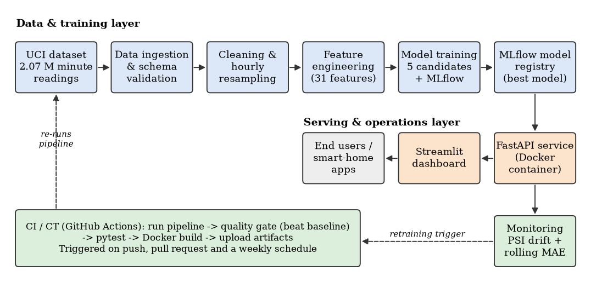

Live forecast
Pick a moment in the held-out test period (Jun–Nov 2010). The deployed model forecasts the following hours, and the chart shows what actually happened.
Model performance
Five candidates trained on 2006–2009, compared on Jan–May 2010 (validation) and tracked in MLflow. The winner is refit and scored once on the untouched test period.
Data explorer
Monitoring
Data drift between training and recent data is measured with the Population Stability Index (PSI > 0.2 = significant).
MLOps pipeline
Every stage is a tested Python module driven by one config file; GitHub Actions re-runs it on each push and weekly.

Pipeline
run_pipeline.py · dvc.yamlTracking & registryMLflow
ServingFastAPI · Docker · Vercel
CI / CTGitHub Actions · pytest
MonitoringPSI drift · rolling MAE
Use the API
The same model is exposed as a REST API. Full interactive docs at /api/docs.
curl "https://YOUR_HOST/api/forecast?origin=2010-11-20T08:00&horizon=6" curl -s https://YOUR_HOST/api/sample-request > req.json curl -X POST https://YOUR_HOST/api/predict -H "Content-Type: application/json" -d @req.json